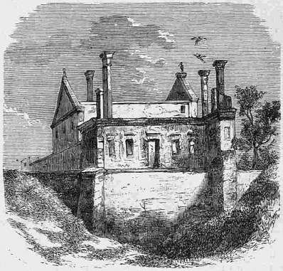

Czartorysk (Volhynia)¶
In the 1380s [Historical record]¶
Czartorysk (now Staryi Chortoryisk) is a village on the Styr in Volhynia, first mentioned in the Hypatian Chronicle in 1100; by the late 14th century it was the seat of Constantine (Kostiantyn), son of Algirdas, whose son Vasili Konstantinovich founded the princely house of Czartoryski. A 13th-century stone tower stands there. The truce of Czartorysk ended the brief Lutsk war of 1431: Poland invaded Volhynia from 25 June, the king crossed on 21 July, Švitrigaila was beaten on the Styr on 31 July, Lutsk castle was besieged from c. 1 August and a Polish assault repulsed on 13 August; an agreement was reached on 26 August and the truce of 1 September 1431 ran to 24 June 1433 (sources vary by a few days). Sources: en.wikipedia (Staryi Chortoryisk, Lithuanian Civil War 1431-35); VLE (Švitrigaila).
Czartorysk (Volhynia)

Czartorysk (Volhynia) · place — Image: Unknown author, Public domain via Wikimedia Commons¶

Tipas |
vietovė |
Pastaba |
Fortified Volhynian town; center of the Czartoryski princely house. |
Sensory sketch¶
A riverside village in Volhynia’s forest and marsh: slow Styr water with reeds and alder, a stone tower older than any wooden house, Orthodox bells, wet meadow, and in late August or early September the first cold mornings, smoke over the harvest, geese on the pasture. Armies camped at the water’s edge make the place noisy: horses, wagons, the pounding of tent stakes and trumpet calls.
Sagoje¶
A truce on the edge of Švitrigaila’s war, signed in the family seat of the men who will kill his rival. The saga uses the place mostly by what it will bear: the Czartoryski brothers, both Gediminids, are the knives of the Trakai murder of 1440 (Book V ch. 21-23).
Getting there¶
Czartorysk is some 60 km north of Lutsk (a day and a half on horse). Brest on the Bug is about 140 km west; Horodło about 180 km; Vilnius about 440 km straight (c. 550 km by road, two weeks). The Styr is navigable, and the river is the natural road from Lutsk to Czartorysk and on toward Pinsk.
Scenes set here¶
Book V ch. 3 Švitrigailos pakilimas (the Volhynian war and the truce of September 1431, offstage); ch. 21 Bajorų sąmokslas, ch. 22 Kraujas ant Trakų akmenų and ch. 23 Vaikas soste (the Czartoryski brothers Aleksandras and Ivanas).
Ryšiai
Events here: Truce of Czartorysk
Chronologija¶
Year |
Event |
Book |
|---|---|---|
1431-09-01 |
V · Vilko Palikimas |
Sąsajos¶
graph LR
czartorysk["Czartorysk (Volhynia)"]
ev_czartorysk_truce["Truce of Czartorysk"]
ev_czartorysk_truce -->|Location| czartorysk
style czartorysk stroke-width:3px